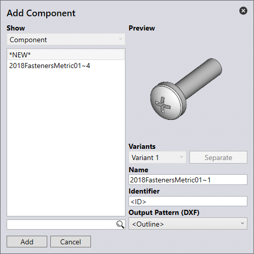

部件辨識
螺母、螺栓等部件通常不需要在此軟體中進行任何額外加工。不過，它有助於收集、辨識和使用此類部件以生成構成組件所需的額外購買項目的可能零件清單。在實踐中存在重大差異，即使是標準部件——例如M8螺栓——如何進行實際繪製。該軟體使用學習系統，後者根據示例學習此類部件名稱。一開始，TecZone Bend不知道任何標準部件，它們以黃色顯示（未識別）。要辨識部件：
-
匯入組件零件。

-
點擊工作流程圖示，然後選取分解組件。

-
組件中的所有部件都以單獨的3D檔案打開。

-
單擊其表面上的任何黃色部件以訪問抓取位置面板。

Figure 1. 表面面板
-
點擊識別… 以訪問添加部件面板。

Figure 2. 添加部件
-
根據需要調整設定：
-
顯示：所有其他已定義的部件也會顯示在這裡。此部件可透過點擊名稱顯示為參考 要返回添加新部件，您必須點擊清單頂部的新建。
-
預覽圖：顯示所選部件的預覽。
-
變型：可以使用與現有名稱相同的部件。例如，通常會有不同的方式對相同的M8螺栓建模。如果添加了有相同名稱的多個部件，它們將變成變型。帶有幾種變型的部件在其名稱後面會列出數量（例如： x4）。如果選擇了其中一個部件，則所有不同的變型都可以顯示。
-
名稱：此名稱用於顯示部件。
-
識別器：可以在此輸入ID。所有這些不同的變型都有相同的名稱和相同的ID。它們僅由不同的3D模型繪製。如果軟體在組件中辨識到其中一個3D模型，此部件將標記有此名稱和此ID。可能發生具有相同名稱的兩個不同部件被錯誤分組的情況。在這種情況下，分離按鈕可用於分離具有新名稱的特定變型。相反，如果要分組兩個原本有不同名稱的部件，只需選擇其中一個並重新命名，使其與另一個協調。兩者都作為相同部件的變型分組在一起。
-
-
點擊添加按鈕將部件保存到資料庫以供日後使用。